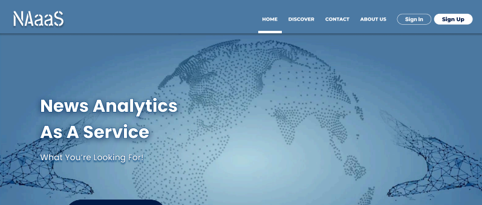
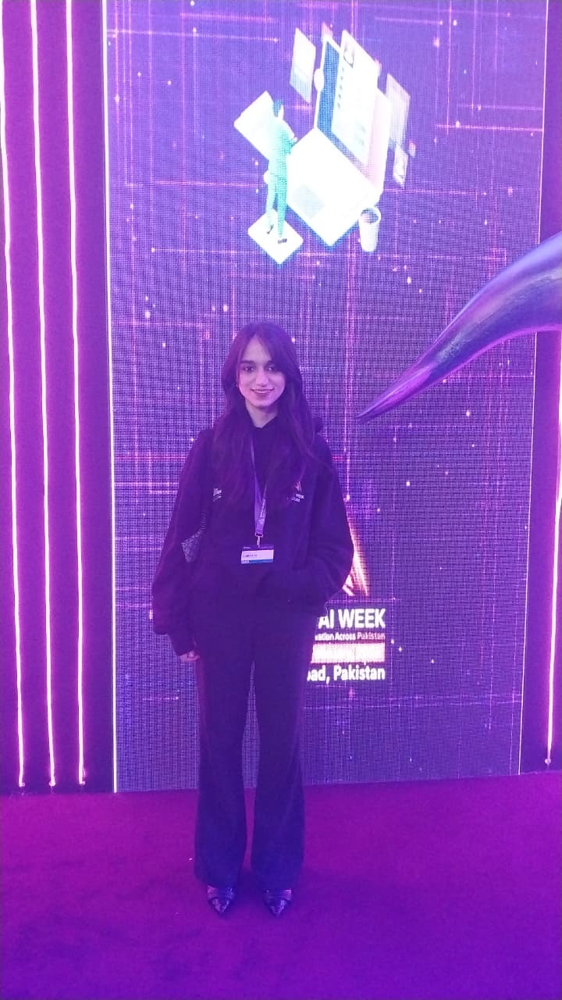
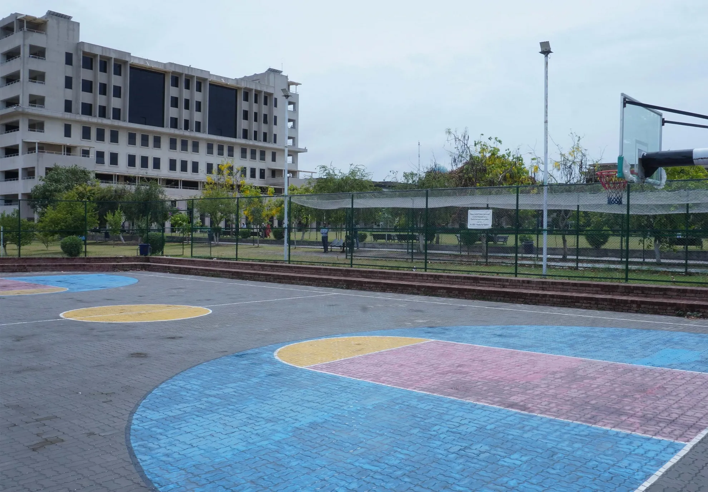
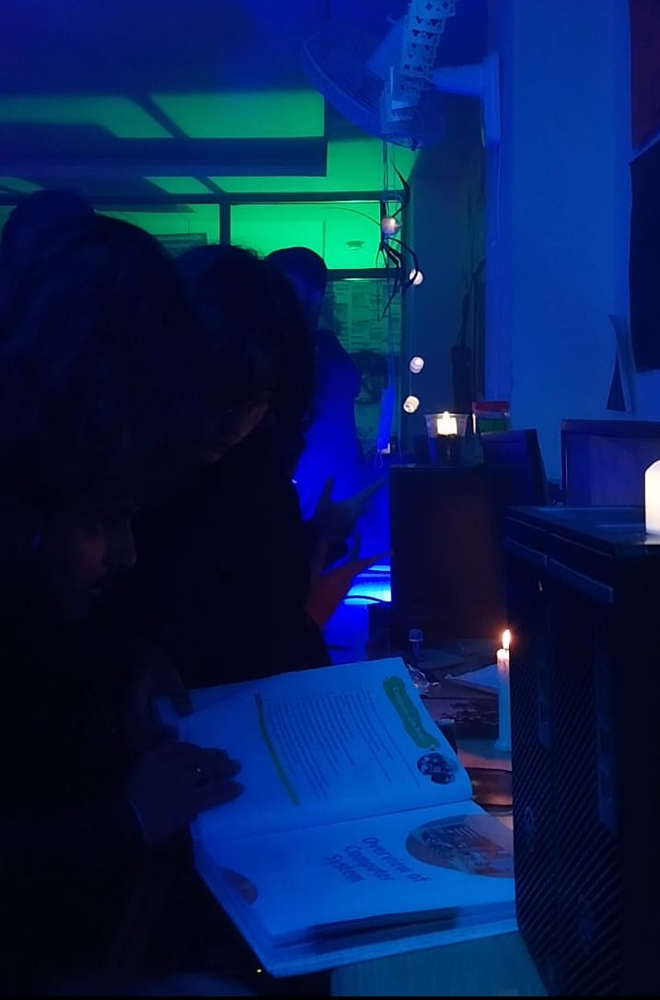
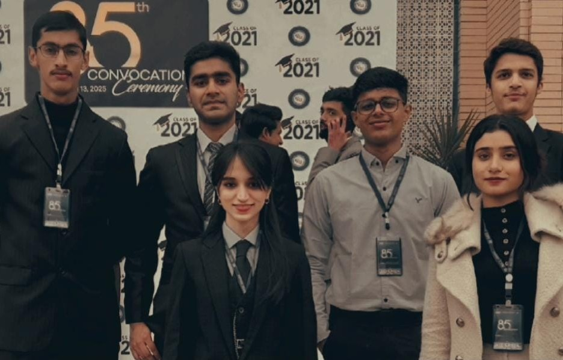
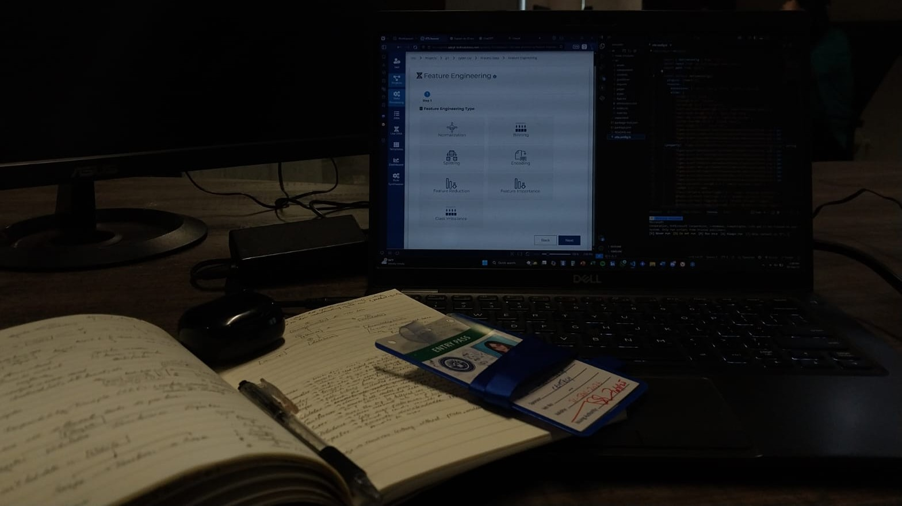
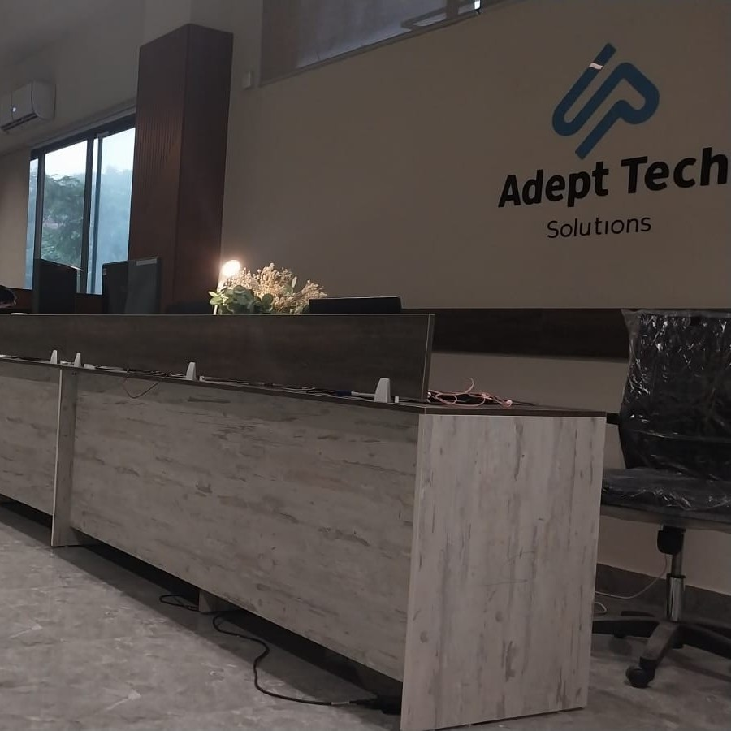
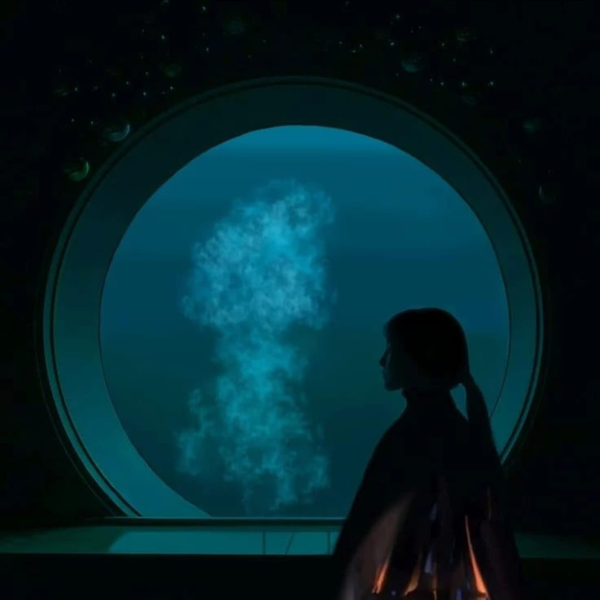

A glimpse into my world — projects, events, and life.
Hover over any image to see more.

Designed and developed NAaaS at PCN Lab — Pakistan's first AI-powered news analytics platform

Hi, that's me attending Indus AI Week conference. 👋

BS FinTech at FAST-NUCES Islamabad Campus

NaSCon'24 — Organized Room 8: Murder Mystery, The Devil's Lair
Volunteered at Angel's Garden — a school for children with neurological disabilities (i.e. Autism)

Usher at FAST's 85th Convocation — 850+ graduates, 7000+ attendees

Ascend — Enterprise Data Engineering Framework

With the ATS team at NSTP, Islamabad

Pixelated Vision — Instagram: @_akaiken_